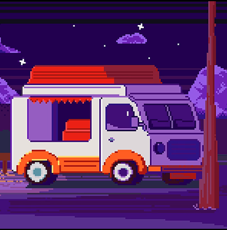

-
Фритрек и нулевой спринт: Подготовка к работе

</START>Это было самое начало пути. На этом этапе важно было проникнуться основами и настроиться на учёбу. И, возможно, подумать, как новые знания могут повлиять на ваше будущее.
Когда я начинал этот курс, я небыл уверен что мне будет понятно хоть что-то, но интерес был сильнее моих сомнений и я двинулся в сторону открытий новый знаний для меня.
-
1 спринт: Я — чистый лист
</HTML>На первых этапах мы работали со страхами и сомнениями, которые часто испытывают новички. Один из них — страх перед чистым листом. Это, конечно же, намного сложнее, чем боязнь куска бумаги. Часто за этим ощущением скрываются более глубокие вопросы: с чего начать? а вдруг будет слишком сложно? что, если я не справлюсь?
При встрече с теорией, я начал ее читать и изучать. Оказалось все было не так страшно как казалось ранее.
-
1 спринт: А если не получится?
</FIRST LOVE>Первый проект — позади! Но это всё ещё самое начало пути. Радость могла быстро померкнуть и смениться ожиданием провала. Или вы, наоборот, могли вдохновиться успехами и поверить в себя.
После удачной сдачи первого проекта, было небольшое недопонимание, потому что он закончился очень быстро, как мне показалось и при этом, я хотел еще делать дальше проекты и поэтому могу сказать, что это вдохновило меня на дальнейшее обучение.
-
2 спринт: Погоня за идеалом
</LUCKY>На этом этапе вы уже достаточно разбирались в основах вёрстки, чтобы понять, как много ещё впереди. Вы могли попытаться погнаться за идеалом и понять, что он недостижим. А, может, вы вовсе и не подвержены перфекционизму и вместо того, чтобы сделать идеально, старались просто сделать.
На начале второго спритна, я был уверен что я его сдам без проблем и продолжил углубляться в верстку.
-
2 спринт: О тех, кто рядом
</PRESENT HEADING>Всё это время вы были не одиноки (хотя, возможно, иногда и чувствовали, что одни против целого мира). Вас окружали одногруппники, команда сопровождения и просто близкие люди, которым можно пожаловаться, если очередной макет просто так не поддавался. Осваивать что-то новое легче, когда рядом есть единомышленники, не правда ли?
После сдачи второго проекта, естественно не с первого и не второго раза, но все таки по итогу успешной сдачи, я понял что мне безумно нравится в этом курсе идеи практических работ и подача теории. На время второго спринта, я не встречался с большими проблемами понимания, поэтому и этот спринт пролетел быстро и гладко.
-
3 спринт: Обходные стратегии
</SUPRISE>На этом курсе вы постоянно решали разные задачи. В какой-то момент вам могло показаться, что решения просто иссякли. Значит, пришло время посмотреть на задачу под другим углом.
На третьем спринте я понимал что возможно будет сложнее в сравнении с прошлыми спринтами и да, ожидания подтвердились.
-
3 спринт: Когда опускаются руки
</HAPPY END>Во время учёбы часто возникает чувство, когда не знаешь, за что хвататься. Вроде и проектную пора сдавать, и задачи хочется порешать, и в теории получше разобраться, и жизнь не забыть пожить. В такие моменты очень нужна концентрация. Вспомните, откуда вы её черпали.
Конец третьего спринта пошатал меня конечно, была задача уже в проекте, над которой я сидел два дня и не мог сдвинуться с места, но что удивило, руки не опустились, я искал решение по пять или семь часов и по итогу нашел, что открыло для меня безумную гордость за самого себя. Это чувство победы с большой буквы в перемешку с эйфорией, думаю я запомню это чувство надолго.
-
«Сейчас я здесь»
</ha-ha-ha>Сейчас вы уже очень много знаете о вёрстке. Но это только начало. Во-первых, впереди ещё много материала про «красотищу». Во-вторых, с окончанием курса учёба не заканчивается. Вёрстка — это целый мир. И этот мир постоянно меняется. Познать его полностью не получится, но это тот случай, когда важен сам процесс познания. Ведь часто путь — и есть результат.
Находясь здесь, могу сказать что, мне все нравится и я готов к сюрпризам, сложностям на несколько часов и незабываемым ощущениям. Спасибо, едем дальше!!!